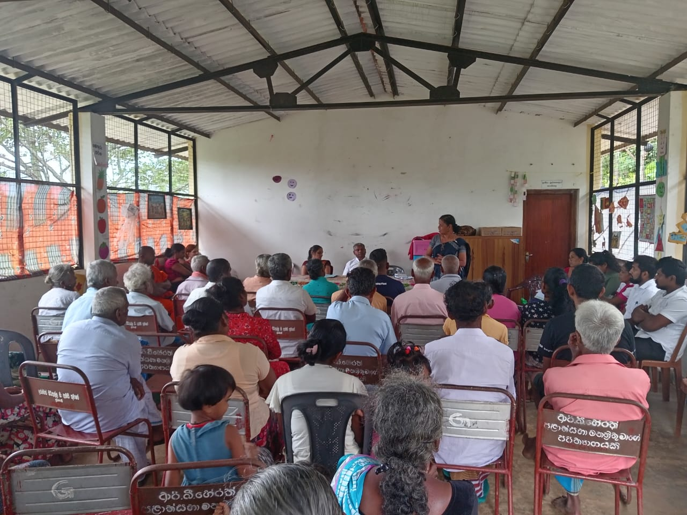
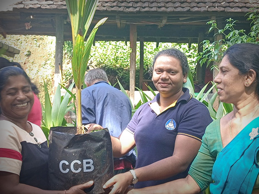
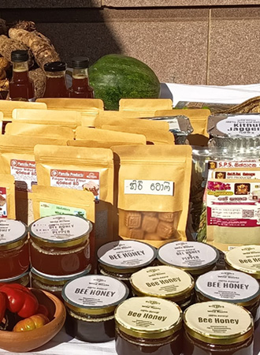
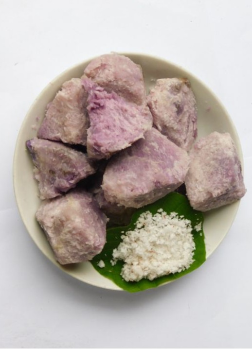
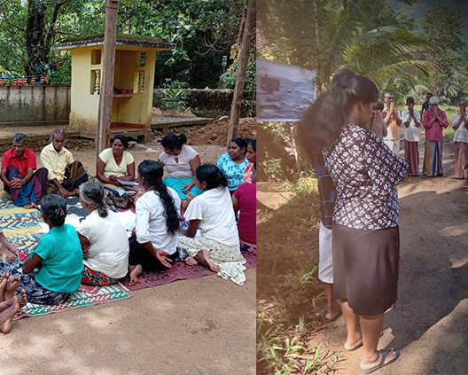

Organic farming methods
Participants learn soil care, composting, chemical-free cultivation, home gardening, and sustainable farming practices that support families and the land.
Loading…
TRAINING & LEARNING
CDC's training programs help community members, women's groups, farmers, youth, and learners gain practical skills they can use in daily life, farming, enterprise, and community leadership.



LEARNING WITH PURPOSE
Training at CDC is designed around real community needs. Sessions are practical, participatory, and connected to the wider work of CDC through the model farm, production unit, community programs, and livelihood support.
WHAT PEOPLE LEARN
Each training area is shaped around practical skills, confidence building, and opportunities for sustainable livelihoods.
Participants learn soil care, composting, chemical-free cultivation, home gardening, and sustainable farming practices that support families and the land.
Training supports people to turn skills, local resources, and small ideas into income-generating activities and community-based enterprise.
Women are encouraged to build confidence, take part in decisions, strengthen leadership, and become active contributors to community development.
Participants learn how local crops, especially yams and traditional foods, can be prepared, processed, and developed into value-added products.
HOW LEARNING HAPPENS
Training begins by understanding community needs, existing knowledge, and the practical challenges people face.
Methods are shown through workshops, field sessions, examples, and guided demonstrations.
Participants take part in hands-on activities, discussions, and group learning to build confidence.
Skills are carried into farming, food production, livelihood work, and community leadership.
WHERE TRAINING CONNECTS
Training is connected to CDC's wider facilities and programs, helping people move from learning to action.
A place for practical farming demonstrations, indigenous crop learning, and sustainable agriculture practices.

A small-scale space where local crops are processed into value-added products while people learn practical production skills.

A welcoming space for workshops, group sessions, discussions, and community learning.
WHO IT IS FOR
CDC welcomes people and groups who want to build skills, share knowledge, and take part in practical community development.
GET INVOLVED
Contact CDC to learn more about training opportunities, community programs, workshops, or collaboration.
Contact CDCOpen programs available year-round for individuals and groups.
Bring CDC trainers to your community or organisation.
Partner with us on programs, funding, or research.